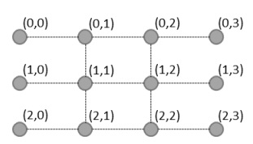

JSOI的地下通道系统由R行C列共R×C个关键节点组成。行和列分别用0到R-1和0到C-1编号，其中最左列（0）和最
右列（R-1）的关键节点是通道系统的地上出入口。通道系统由水平和竖直的单位长度无向隧道相连，构成一个网
格图。下图展示了一个3行4列的地下通道系统

经过情报部门的精密估计，对于每条地下隧道都有一个概率P，表示这条地下隧道被破坏的概率。每条隧道被破坏
均为独立事件。现在给出了这个地下网络，JYY需要计算在遭遇敌军破坏后，地下通道系统仍然能够运作的概率。
地下通道系统能运作当且仅当存在一系列未被破坏的隧道，经由这些隧道能从第0列的某个地上出入口到达第C-1列
的某个地上出入口。